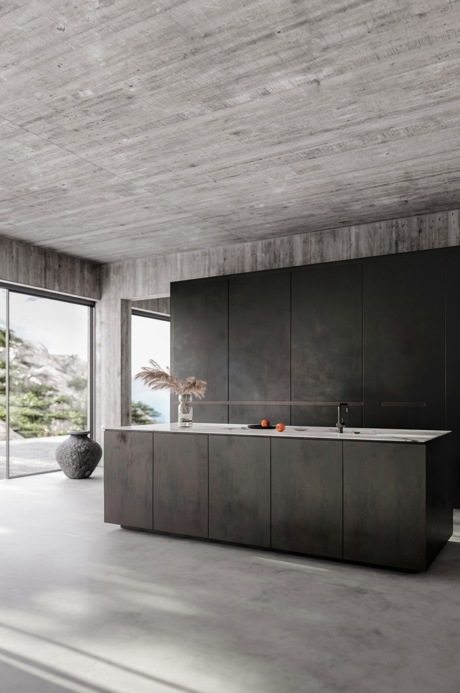

Семейство · Микротопинг
Тонкое полимер-цементное декоративное покрытие 2–3 мм. Бесшовный монолит на пол, стены, столешницы, ванные. Архитектурный замысел в материале без видимых стыков, любой цвет, тёплая на ощупь поверхность.

О материале
Микротопинг — современное полимер-модифицированное цементное покрытие, наносимое тонкими слоями (по 1–1.5 мм за проход) кельмой или гладилкой. Получается монолит без швов с любым цветом, любой текстурой — от зеркально-гладкого до грубо-каменного. Главное преимущество перед плиткой: бесшовность (нечего засасывать жир и грязь, ничего не отклеивается) и тонкость (можно класть поверх существующих покрытий без поднятия уровня пола).
Главное ограничение: микротопинг не любит heavy traffic. 2–3 мм цементного покрытия не выдержит forklift, не выдержит десятки людей с песком на обуви ежедневно. Подходит для резиденций, дизайнерских офисов, бутиков, ресторанов с умеренной проходимостью. Для производства — нет.
Системы
2–3 мм
Базовая система для жилых и коммерческих полов. 2 слоя по 1.5 мм + sealer. Подходит для большинства интерьеров.
Подробнее1.5–2 мм
Та же эстетика на вертикали — стены ванной, фартуки кухни, акцентные стены. Тоньше пола, без slip-вопросов.
Подробнее2–3 мм
Влагостойкая система: гидроизоляция + микротопинг + усиленный sealer. Душевая зона, бассейны, спа.
ПодробнееСтруктура
↓ основание
Подводные камни
подложка
Любая неровность, шов, ямка — будет видна через 2 мм покрытия. Кривое основание = кривой финиш.
эксплуатация
2–3 мм цемента не выдержит forklift, ничего не сделает с песком на обуви в больших количествах. На производстве сотрётся за 6–12 месяцев.
материал
Цементное связующее реагирует с уксусом, лимоном, вином. Травление = матовое пятно навсегда (через sealer пробиваться сложнее, но возможно).
время
Пешая через 24 часа после sealer, мебель через 3 дня, полная нагрузка через 7 дней. Раньше — sealer повреждается, поверхность царапается.
материал
При t > +28°C или сквозняке cure идёт лавиной — поверхность трескается на сетку микротрещин.
цвет
Если на разных участках разная толщина или скорость cure — финальный тон может "плыть". Заплыв = брак.
Процесс
Подготовка
Шлифовка пола, шпаклёвка, проверка ровности SR1.
1 деньПраймер
+ сетка
Грунтовка, армирующая стеклосетка, cure 12 ч.
1 деньБазовый слой
1.2 мм первый слой, разравнивание, cure 24 ч.
1 деньФинишный слой
Abrade базового + 1.0 мм финишного с пигментом, cure 24 ч.
1 деньШлифовка
и выглаживание
Лёгкая шлифовка для нужной текстуры.
0.5 дняSealer
2 слоя PU sealer для пола / wax для стен.
1 деньСдача
Финальный cure 24 ч, инструкция по уходу, защита поверхности.
7 дней до полнойЧастые вопросы
Подберём палитру под референсы дизайнера, отправим образцы, выйдем на замер. Sample 100×100 мм — бесплатно.